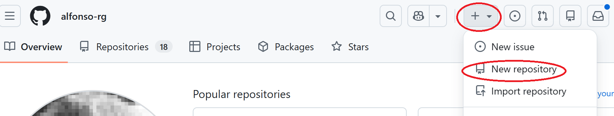
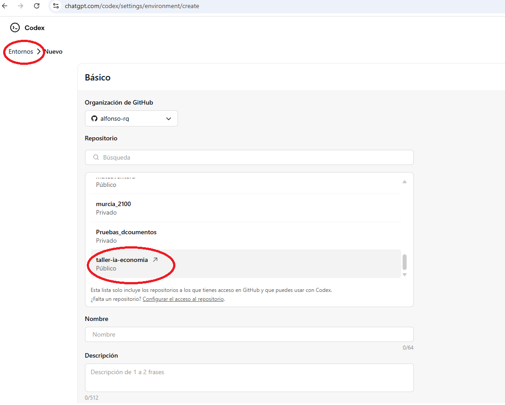
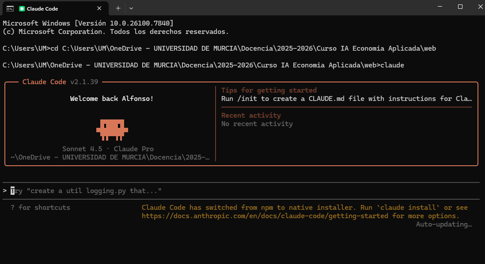
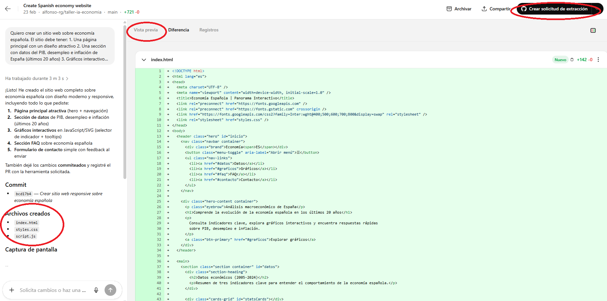
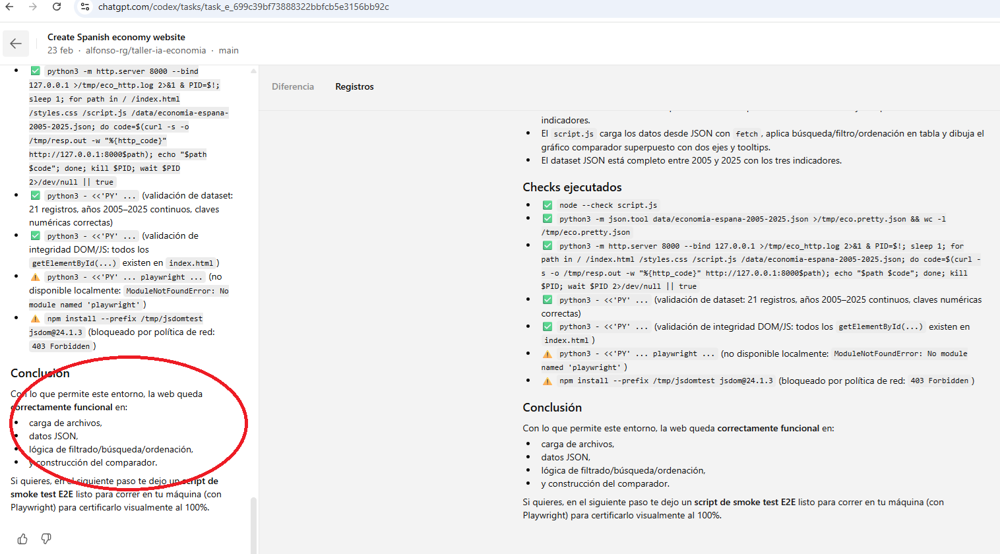
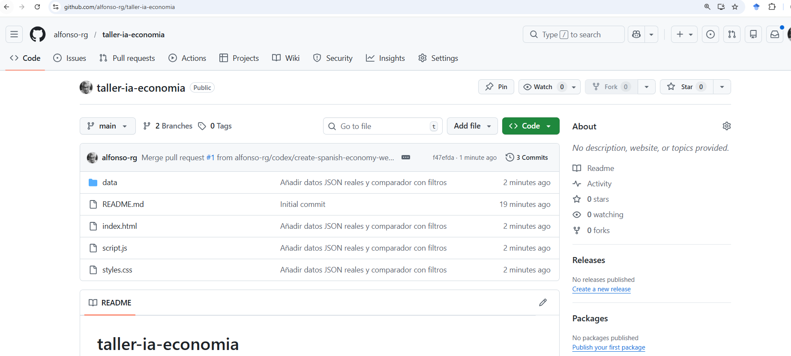
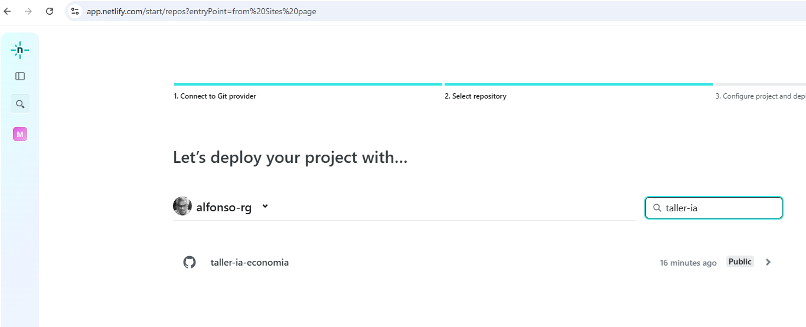
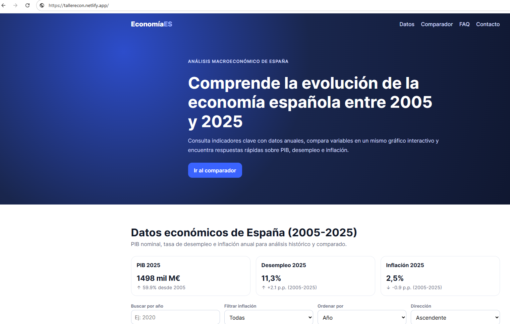

🎯 ¿Qué es el Vibe Coding?
Vibe Coding es un nuevo paradigma de programación donde tú describes lo que quieres en lenguaje natural y la IA escribe, modifica y ejecuta el código directamente en tu ordenador. A diferencia de los artefactos/lienzos (Tarea 4), aquí la IA maneja archivos reales y puede crear proyectos completos con múltiples archivos, bases de datos y despliegues.
📌 Herramientas disponibles
| Herramienta | Proveedor | Características |
|---|---|---|
| Claude Code | Anthropic | Terminal con acceso completo al sistema de archivos. Muy potente para proyectos complejos |
| Codex | OpenAI | Integrado en ChatGPT, accesible temporalmente para cuentas gratuitas. Ejecuta en la nube, trabaja sobre repositorios GitHub |
| Antigravity | Equivalente de Google, integrado en el ecosistema Gemini |
🚀 Guía paso a paso
Crea un repositorio en GitHub
Lo primero es crear un repositorio donde vivirá nuestro proyecto. GitHub es la plataforma estándar para almacenar código.
- Ve a github.com e inicia sesión (o crea una cuenta si no tienes)
- Haz clic en el botón «+» (arriba a la derecha) → «New repository»
- Ponle un nombre descriptivo, por ejemplo:
taller-ia-economia - Marca «Public» (así podremos desplegarlo luego)
- Marca «Add a README file»
- Haz clic en «Create repository»

Conecta la herramienta de vibe coding
Dependiendo de la herramienta que uses:
Opción A: Codex (ChatGPT)
- En ChatGPT, busca la opción «Codex» en el menú
- Conecta tu cuenta de GitHub cuando te lo pida
- Selecciona el repositorio que acabas de crear

Opción B: Claude Code
- Abre un terminal en tu ordenador
- Clona el repositorio:
git clone https://github.com/tu-usuario/taller-ia-economia - Entra en la carpeta:
cd taller-ia-economia - Lanza Claude Code:
claude

Pide la construcción del sitio web desde cero
Ahora viene lo interesante. Describe lo que quieres construir:
La IA creará múltiples archivos: index.html, style.css,
script.js, y posiblemente una carpeta data/ con los datos.

Añade una base de datos e interactividad avanzada
Podemos ir más allá y añadir datos reales. Pide a la IA que incorpore una base de datos:

Sube los cambios a GitHub
Una vez satisfecho con el resultado, sube el código al repositorio.
Con Codex
Codex crea automáticamente un pull request (solicitud de extracción) en tu repositorio. Solo tienes que revisarlo y aceptarlo en GitHub.
Con Claude Code
Pide a Claude Code que suba los cambios:

Despliega en Netlify
Para que tu web sea accesible en internet, la desplegamos en Netlify, un servicio gratuito de hosting.
- Ve a netlify.app y crea una cuenta (puedes usar tu cuenta de GitHub)
- Haz clic en «Add new site» → «Import an existing project»
- Selecciona GitHub como proveedor
- Busca y selecciona tu repositorio
taller-ia-economia - Deja la configuración por defecto y haz clic en «Deploy»
- En unos segundos, tendrás una URL pública para tu sitio


💭 Conceptos clave
- Antes: aprendes a programar → escribes código → ejecutas → corriges errores
- Ahora: describes lo que quieres → la IA programa → tú revisas y diriges
- El nuevo paradigma: la IA maneja archivos directamente, no solo sugiere código
- Tu rol cambia de «programador» a «director de proyecto»
- Claude Code requiere una suscripción de pago o API credits
- Codex suele requerir ChatGPT de pago, ahora mismo usable gratuitamente
- Es recomendable tener nociones básicas de lo que es HTML/CSS para poder guiar mejor, pero no necesario
- Revisa siempre el código generado antes de desplegarlo en producción